Home / Demolition Robots & Demolition Attachments / Crusher bucket (jaw crusher bucket) for 20 t excavator

Illustration similar – shows the product type.
Demolition Robots & Demolition Attachments
Crusher bucket (jaw crusher bucket) for 20 t excavator
Hydraulic crusher bucket to crush concrete and rock on site.
The crusher bucket crushes demolition concrete, brick and natural stone with a jaw chamber directly on the excavator, making recycled material usable on site. Made of wear-resistant steel with replaceable jaws. Buyers expect CE conformity, adjustable gap width and a hydraulic system matching the carrier.
Technical data
| Trägergewicht | approx.; 18-25 t |
|---|---|
| Prinzip | jaw crusher, hydraulic |
| Spaltweite | adjustable |
| Material | wear-resistant steel |
| Anschluss | pins/quick coupler per carrier |
| Customs tariff number (HS) | 84314980 |
EU standards and regulations
2006/42/EG (ab 20.01.2027: (EU) 2023/1230)Machinery Directive / Machinery Regulation, CE conformity (interchangeable equipment)EN ISO 12100Safety of machinery, risk assessmentEN 474-1Earth-moving machinery, general safety requirements
Goes well with

Hydraulic breaker for 20 t excavator20 t class hydraulic breaker for concrete demolition, foundation removal and rock work on the excavator.
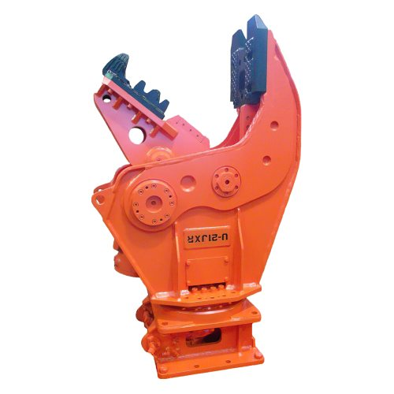
Hydraulic concrete pulverizer, 360° (20-30 t)Rotating demolition crusher for breaking reinforced concrete and separating the rebar for type-pure deconstruction.
More products in this category
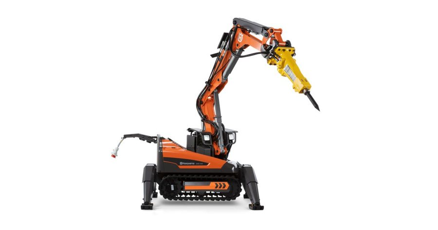
Remote-controlled demolition robot (approx. 1-2 t)Radio-controlled electric demolition robot with a hydraulic arm for strip-out, deconstruction and asbestos remediation in confined interiors.
Remote-controlled demolition robot, medium class (approx. 2-3 t)Radio-controlled 2-3 t demolition robot with a hydraulic arm for strip-out, wall and floor demolition and deconstruction inside buildings.

Remote-controlled demolition robot, heavy class (approx. 5 t)Radio-controlled 5 t heavy demolition robot for high-volume concrete demolition, foundation and industrial deconstruction.
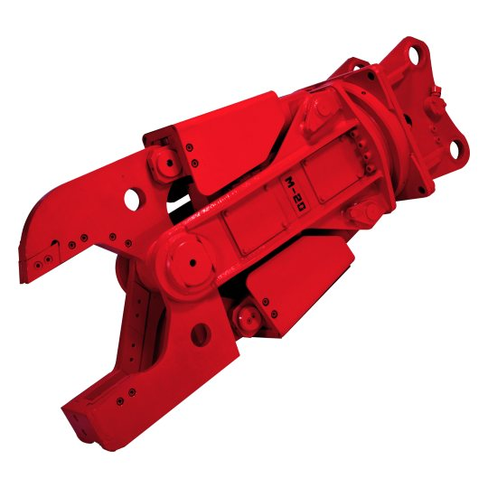
Hydraulic demolition shear / pulverizer for 20 t excavatorRotating hydraulic shear for 20-30 t excavators to cut steel beams, rebar and concrete elements.

Hydraulic demolition and sorting grapple (20-30 t)Hydraulically rotating grapple for sorting, loading and dismantling demolition material directly on the excavator.
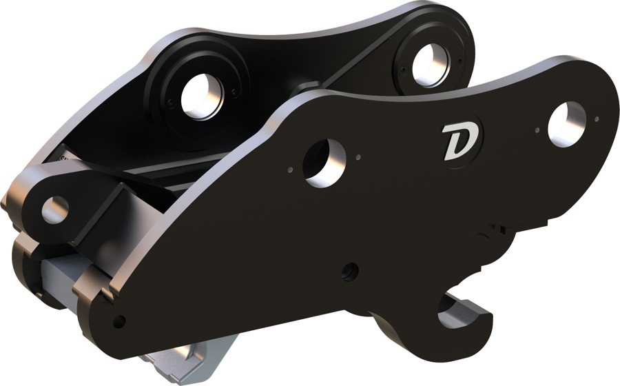
Hydraulic quick coupler (20 t class, double locking)Hydraulic quick coupler for changing tools on the excavator from the cab, with double locking.
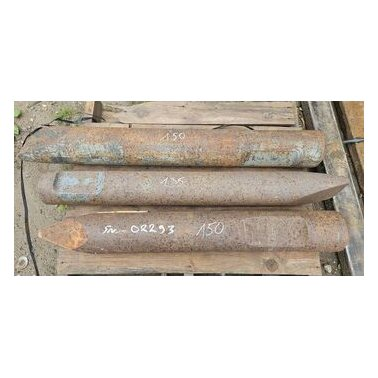
Chisel for hydraulic breaker (moil point, approx. 140 mm dia., 20 t class)
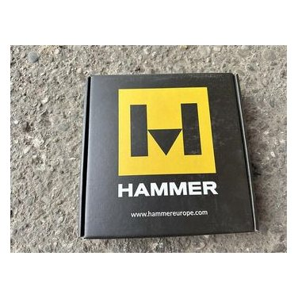
Maintenance and wear-part kit for hydraulic breaker (seal kit, bushings, retaining pins, chisel paste)

Hydraulic hose kit with flat-face couplers (up to 350 bar) for breaker and attachments
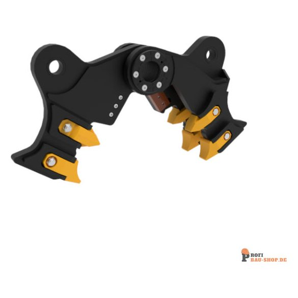
Replacement jaw kit for demolition shear and pulverizer (cutting blades and crushing teeth, wear-resistant steel)
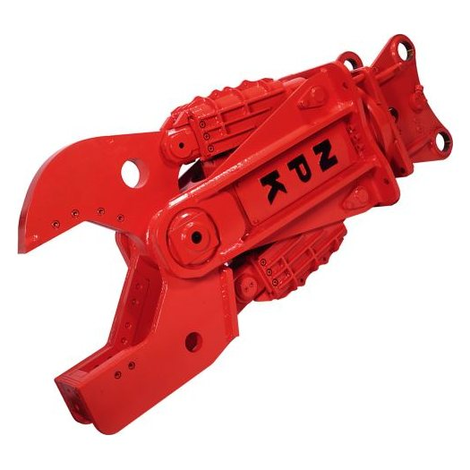
Multi-processor demolition shear with hydraulically interchangeable jaws, for 18–30 t excavatorsOne attachment with six interchangeable jaws for scrap cutting and demolition on the excavator, hydraulically rotatable through 360°.

Hydraulic steel shear (scrap shear) for excavators of the 18–27 t class, 360° rotatingRobust steel and scrap shear for dismantling, scrap yards and steel construction, cuts round steel (rating 30 mm), sections and plate.
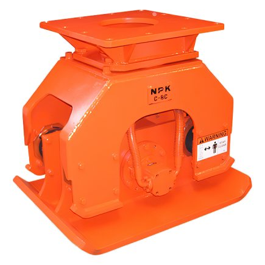
Excavator plate compactor (hydraulic vibrating plate) for excavators of the 17–23 t classHydraulic vibrating plate on the excavator arm (900 kg) for compacting trenches, pipe zones and road patches from the cab.

Excavator-mounted vibro driver (hydraulic vibratory hammer) for excavators of the 18–25 t class, for sheet piles and sectionsVibratory hammer carried on the excavator arm (265 kN) for driving and extracting sheet piles, beams, pipes and PV profiles.

Orange-peel grapple with rotator for 20–24 t excavatorsFive-tine, endlessly rotating orange-peel grapple (0.5 m³) for scrap, wood, stone and demolition debris.
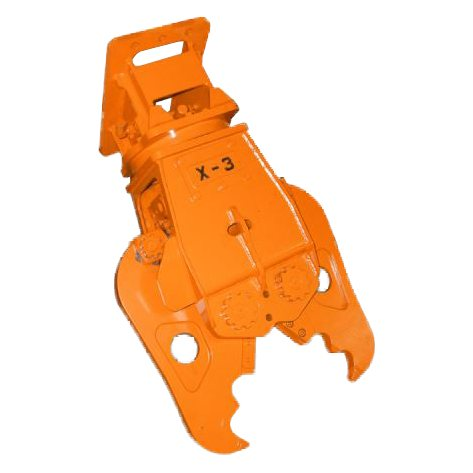
Demolition crusher tong for mini excavators (1.7–4 t), hydraulic, single cylinderCompact single-cylinder demolition and cutting tong (210 kg) for mini excavators, for breaking concrete and cutting rebar.
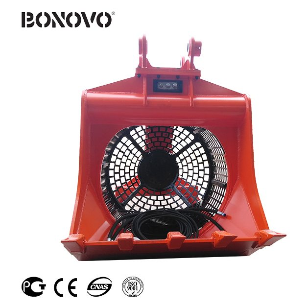
Rotary screening bucket, hydraulic 360°, for excavatorsRotary screening bucket to separate soil, rubble and rock.

Clamshell grab bucket for excavators, rotatingHydraulic clamshell grab for bulk material, spoil and dredging.
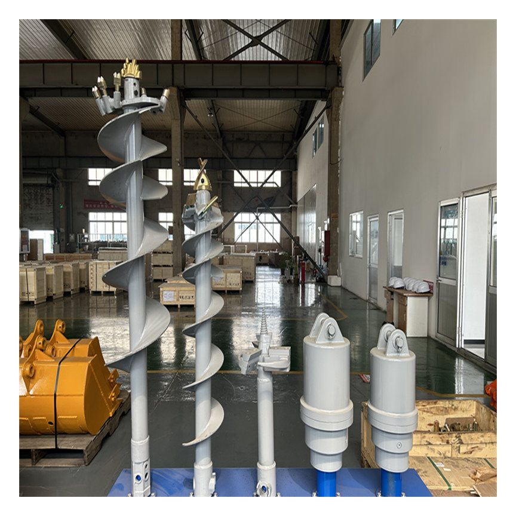
Hydraulic auger drive for excavatorsHydraulic earth auger for excavators for post, fence and planting holes.

Ditching / grading bucket (tilting) for excavatorsWide ditch-cleaning and grading bucket for sloping and trench work.
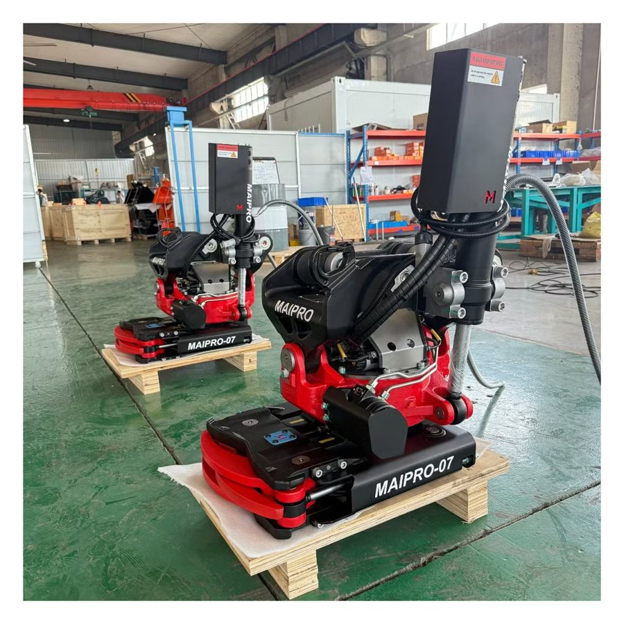
Tiltrotator for 5-8 t excavatorsHydraulic tiltrotator with 360° rotation and 45° tilt for 5-8 t excavators.
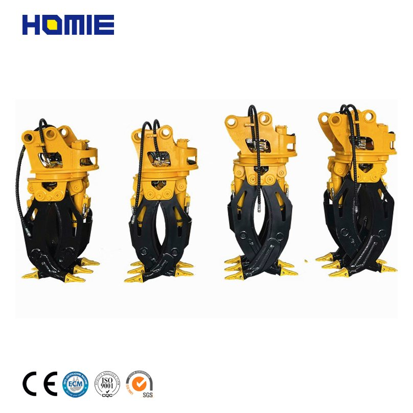
Timber grab / rotating grapple for excavatorsHydraulic rotating timber and stone grapple for excavators.
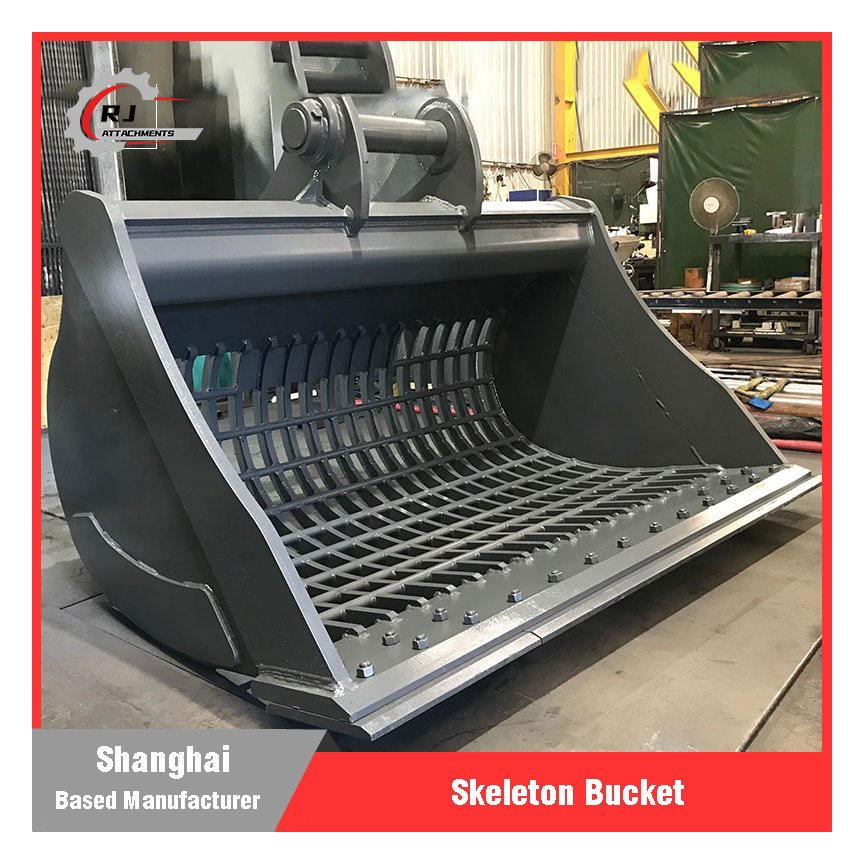
Skeleton sieve bucket for excavatorsGrid sieve bucket for screening soil and rubble.